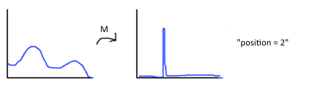

In traditional quantum mechanics, there are two basic processes: unitary evolution and measurements. Unitary evolution governed by the Schrodinger equation is interrupted by measurements, which stochastically return a given value and collapse the state of the system onto an associated subspace. The picture below illustrates the result of a measurement in the position basis.
This webpage will explain, using simple examples, how many features of the process of measurement can be explained as a consequence of some types of unitary evolution.
Single measurement
How can we try to explain measurement as a consequence of unitary evolution? Well, when we make a measurement, we typically use some apparatus to do so. In the process, the state of the apparatus becomes correlated with that of the system. For instance, if we have an apparatus that measures the position of a particle and displays some coordinates on a screen, the state of the screen is now correlated with that of the system.
We can represent this in the formalism of quantum mechanics. Assume our system starts off in a state $|\psi \rangle$ and our apparatus in a 'ready' state $|A_0 \rangle$ If the system begins in a "definite state" $|i \rangle$ of the measurement then the evolution should keep it in that state, while altering the state of the apparatus to establish correlations:
$$U_{meas} |A_0 \rangle |i \rangle = |A_i \rangle |i \rangle $$By linearity, the general form of the measurement should be:
$$ U_{meas} |A_0 \rangle \otimes |\psi \rangle = U_{meas} |A_0 \rangle \otimes \sum_i a_i |i \rangle = \sum_i a_i |A_i \rangle \otimes |i \rangle$$Now let us make one more assumption about the measurement process. Assume the final states of the apparatus are completely distinguishable. This is a reasonable assumption -- the measuring devices we use have highly distinguishable final states.(e.g. different numbers on a computer display) This implies that $ |A_i \rangle$ and $|A_j \rangle$ are orthogonal for $i \neq j$.
These assumptions explain the appearance of 'collapse' to one of the eigenstates of the measurement. How? Well, consider a local measurement, that is a measurement performed on only the system(or only the apparatus). The statistics for any such measurement are encoded in the partial density matrix
$$\rho_S = Tr_A { \sum_{ij} a_i a_j^* |A_i \rangle |i \rangle \langle j| \langle A_j| } = \sum_i |a_i|^{2} |i\rangle \langle i|$$Therefore, any local measurements will have statistics indistinguishable from a probabilistic mixture of the $|i \rangle$s. In other words, the system will appear as though it is now in state $|i \rangle$ with probability $|a_i|^2$, which is precisely the "collapse of the wavefunction".
In realistic environments, entanglement will very quickly spread from the system to the apparatus and beyond into the rest of the universe. So any measurements performable by realistic observers(such as humans) will be effectively local -- and therefore, will give the appearance of collapse.
Let's examine a concrete example. In the simplest case, the system and apparatus will both consist of 2-state systems.(a.k.a. qubits). An interaction of the desired form is the CNOT
$$U_{CNOT} |00 \rangle = |00 \rangle$$ $$U_{CNOT} |01 \rangle = |11 \rangle$$Below is an animation of this situation. Each box contains an arrow representing the amplitude associated to a particular basis vector of the joint system. For instance, the top-left box displays the amplitude of $|00\rangle$, and the top-right box displays the amplitude of $|01\rangle$. "Rotation" will time-evolve the system using the Hamiltonian $$H_s = \left( \begin{matrix} \frac{1}{2}&1 \\ 1&\frac{1}{2} \end{matrix} \right) $$ while "Measurement" will perform a CNOT measurement. Double click a button to pause evolution.
Repeated measurements.
How can we explain repeated measurements using the formalism considered above?
We imagine a sequence of measurement apparatuses $|A^1\rangle$, $|A^2\rangle$ , ..., $|A^n\rangle$ During a measurement, an apparatus $|A_i\rangle$ becomes entangled with the system, time evolution continues, and another measurement, this time with apparatus $|A_{i+1}\rangle$ is made. The reader might object that typically a single apparatus is re-used. In this case, we can imagine the 'apparatus' states as being states of some record of the measurement outcomes. Then the joint state $|A^1 A^2 ... A^n \rangle$ contain records of a series of measurement outcomes, rather than of the instantaneous state of the system.
After a 'collapse', the collapsed system will continue evolving in the manner it had before the measurement. This is a consequence of the orthogonality(or near-orthogonality) of the corresponding states of the apparatuses, combined with the fact that the evolution of the system is typically governed by a unitarity that is local(or mostly local), i.e. it is approximately of the form
$$U_{total} = U_{system} \otimes I$$.This implies that it will take
$$ U_{total} ( \sum_i a_i |i\rangle \otimes |A_i\rangle ) = \sum_i a_i (U_{system} |i\rangle) \otimes |A_i\rangle$$so each 'collapsed' component of the sum will evolve independently of the others, and the density matrix will remain in diagonal form.
Below is an example allowing iterated evolution and measurement of the system. The system Hamiltonian is the same as in the last example, and the two measurement operators are CNOTs on bits 1 and 2, respectively.
Preferred Basis Problem
In traditional quantum mechanics, a measurement is defined by a Hermitian operator -- or equivalently, a basis of the system to be measured. We would like to understand measurement as a special case of unitary evolution. So, given a system and apparatus undergoing some unitary evolution, how can we determine what basis was measured?
This is not a completely trivial question. For instance, consider the CNOT example above, with starting state $A_0 = |0\rangle$ and $|\psi\rangle = \frac{1}{\sqrt2} (|0\rangle + |1\rangle)$. The final state is $\frac{1}{\sqrt{2}}( |00\rangle + |11\rangle )$.
This is in the "completed measurement" form. But consider the alternate basis $$|+> = \frac{1}{\sqrt{2}} (|0\rangle + |1\rangle)$$ $$|-> = \frac{1}{\sqrt{2}} (|0\rangle - |1\rangle)$$ It can easily be verified that $\frac{1}{\sqrt{2}}( |00\rangle + |11\rangle ) = \frac{1}{\sqrt{2}}( |++\rangle + |--\rangle )$. So what has been measured -- the basis $|0\rangle / |1\rangle$ or $|+\rangle / |-\rangle$?
Below is an animation of this situation.
The Pointer Basis
The solution to this problem can be found when one considers that the apparatus used for measuring is rarely an isolated system, but is in contact with a surrounding 'environment' which interacts with it. For instance, typical measuring devices in labs are surrounded by a bath of air and light which continually interact with the apparatus.
The environment will induce evolution of the apparatus states according to an interaction Hamiltonian $H_{AE}$. Let's assume for simplicity that there is no effect on the system caused by this Hamiltonian, and that the environment and apparatus remain unentangled. The apparatus states will evolve according to the unitarity
$$U_{AE} = exp \{ -i H_{AE} t \}$$Let's consider the effect of this unitarity on the measurement basis states. In general, we can write
$$U_{AE} |A_i \rangle = \sum_j c_j |A_j\rangle$$ $$U_{AE} |i\rangle |A_i\rangle = |i\rangle \otimes \sum_j c_j |A_j\rangle$$Therefore, unless $c_j = 0$ for all $j \neq i$, the correlation between apparatus states and system states will be destroyed. This will also result in the "collapsed" basis states of the system no longer evolving independently.
For $c_j = 0$ for all $j \neq i$, we require that the apparatus basis states be eigenvectors of the unitarity for all times $t$ -- equivalently, they must be eigenvectors of $H_{AE}$. So the form of $H_{AE}$ picks out a unique basis of $A$ which can robustly store records, and therefore(via the measurement interaction) a preferred basis into which the system collapses.
In the example below, we model the environment as a third qubit, and the environment-apparatus interaction as $$H_{AE} = ( |0\rangle \langle 0| - |1\rangle \langle 1| ) \otimes ( |0\rangle \langle 0| - |1 \rangle \langle 1| ) $$.
The eigenvectors of this Hamiltonian(in the apparatus basis) are $|0\rangle$ and $|1\rangle$. So only this basis will maintain correlations with the system after interaction with the environment.
Conclusion
We have seen that many features of the process of measurement -- correlation with a measurement apparatus, apparent 'collapse' of the state, and the selection of the basis of measurement -- can be explained as a consequence of particular types of unitary evolution.
The reader should be aware that the discussion above simplified the situation greatly. Usually, real-life systems only approximately match the situations presented. For instance, the off-diagonal terms in the system's density matrix will generally approach but not be equal to zero. Lastly, the above remarks do not provide a solution to the full problem of how measurement works.There is still no consensus on exactly how (or if) the classical world emerges from quantum mechanics, or how measurements in particular can be explained. Nevertheless, the ideas of decoherence are a significant step towards such an understanding. (Oh, also don't trust the evolution of the example systems beyond a certain point. Numerical inaccuracies compound after running for a while)
Further Reading
This page has irrigorouly surveyed only the most basic concepts of decoherence. To learn much more, try the book "Decoherence and the Quantum-to-Classical Transition" by Maximillian Schlosshauer.